Fluma is a display typeface designed by Baturay Kocatepe. Its forms combine broad, rounded volumes with narrow connections and tapered endings. The changing widths give short words a flowing rhythm at large sizes. Fluma is intended for headlines, visual identities, posters, and editorial compositions where the shapes of the letters can be seen clearly. To contribute, see github.com/baturaykocatepe/Fluma-Font.
The family currently has one Regular style. It covers the GF Latin Core character set, including the Turkish letters Ç ç Ğ ğ İ ı Ö ö Ş ş Ü and ü. The set also includes accented Latin letters, punctuation, figures, currency signs, and symbols. The design is most appropriate for display use; the intricate contours and marked changes in width are part of its character and should be evaluated at the size and in the context in which the font will be used.
The editable project was created in Glyphr Studio. Its source is provided together with a converted UFO and a reproducible build for TTF and OTF files. The build adds positioning for combining marks and substitutions for dotted letters when a top accent is attached. The font software is licensed under the SIL Open Font License, Version 1.1. The specimen images have a separate CC BY-SA 4.0 license.
The following 22 pages show the original specimen sequence. They were prepared as a connected presentation, with page numbers retained in the artwork. Some text on the specimen pages describes an earlier export of the font; the current source and compiled files in the repository are the reference for technical coverage.
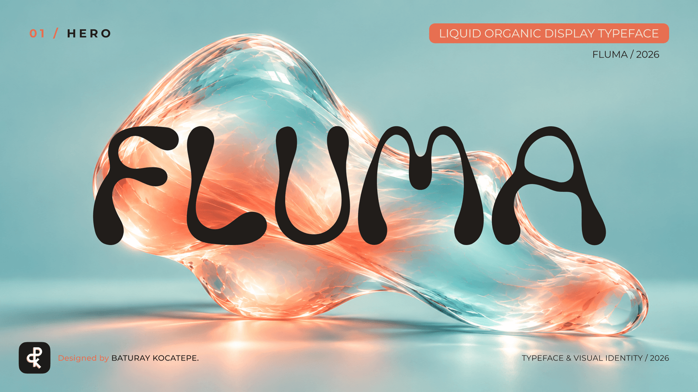
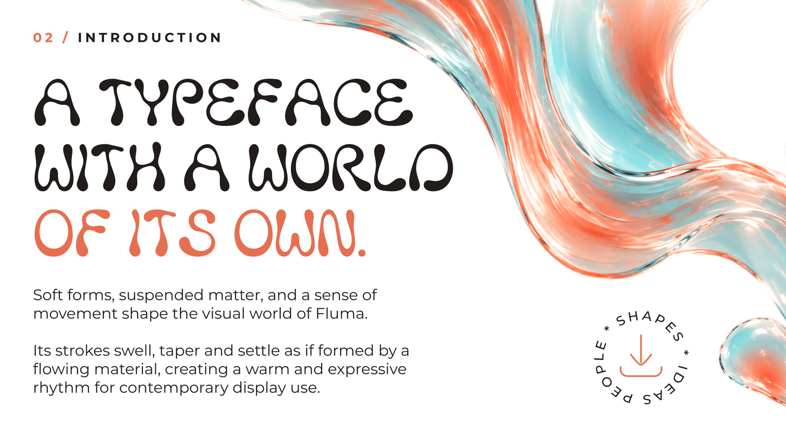
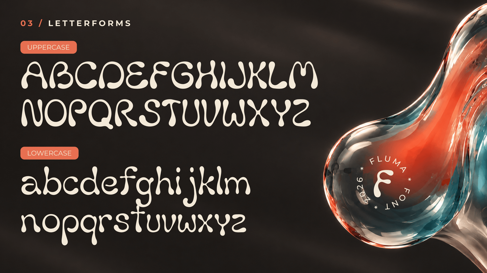
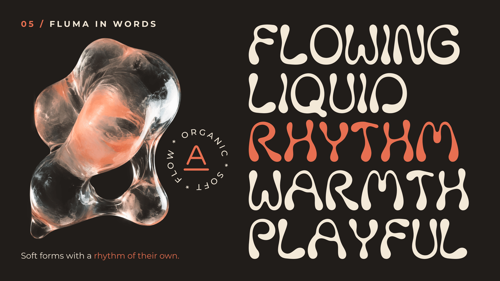
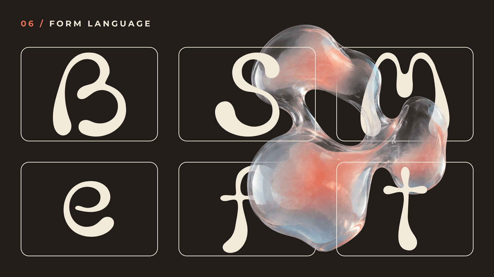
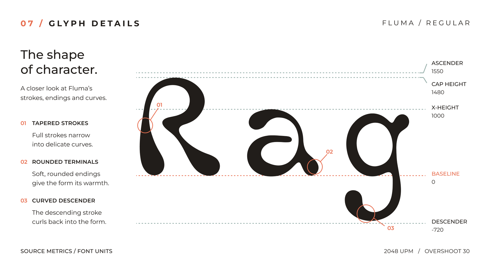
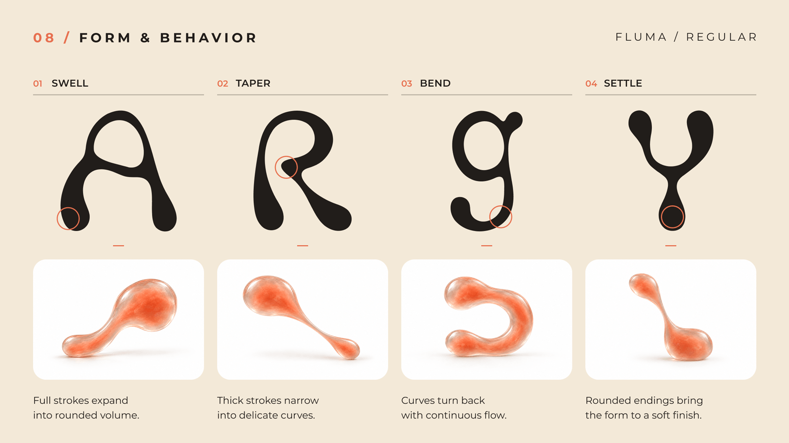
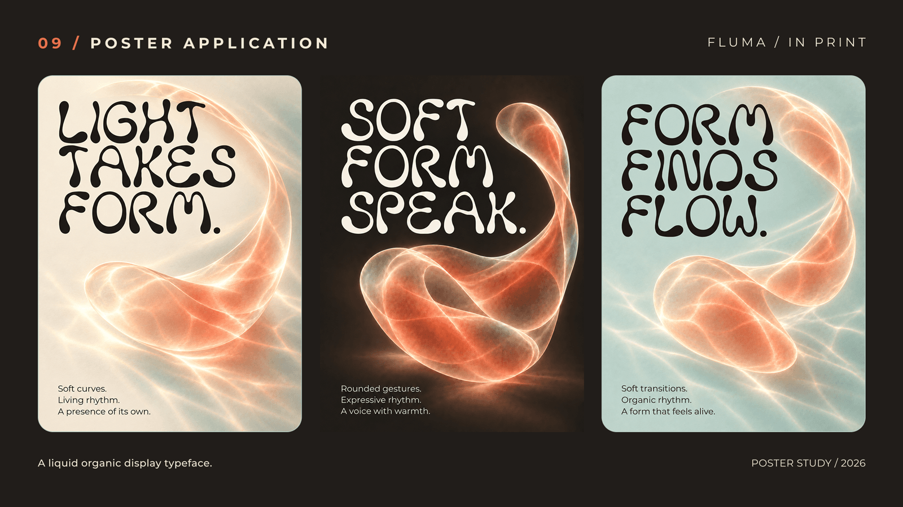
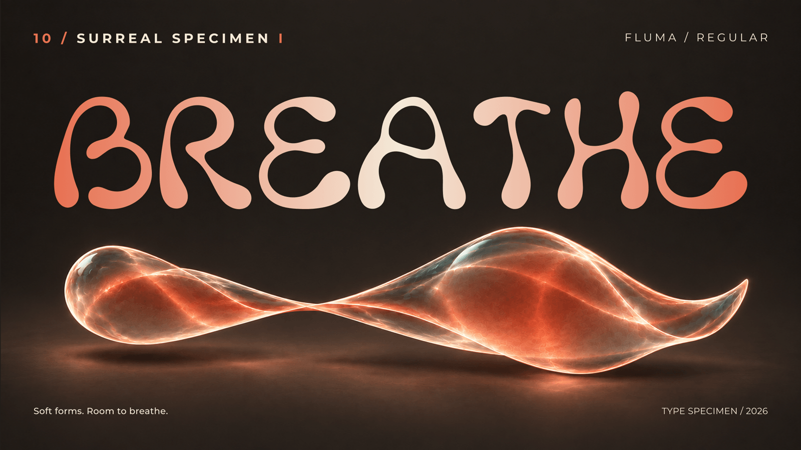
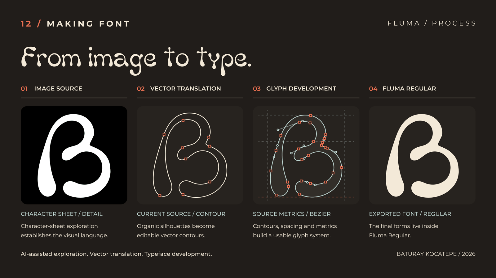
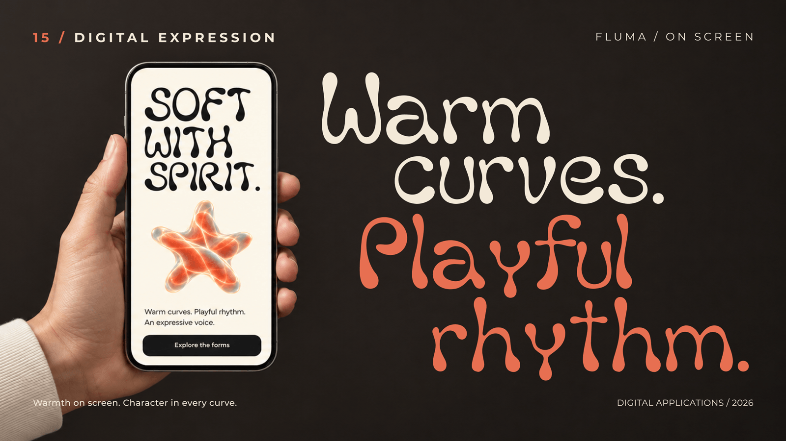
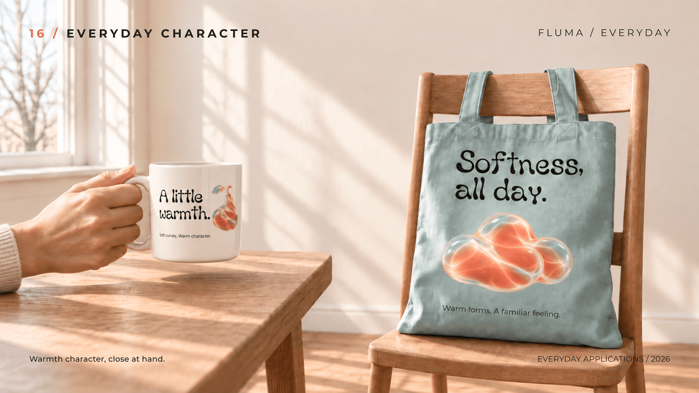
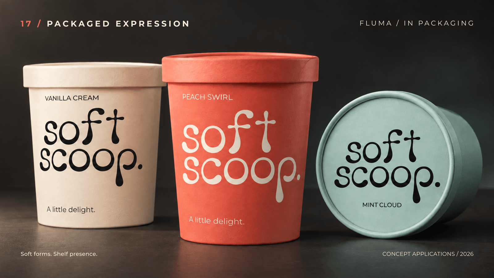
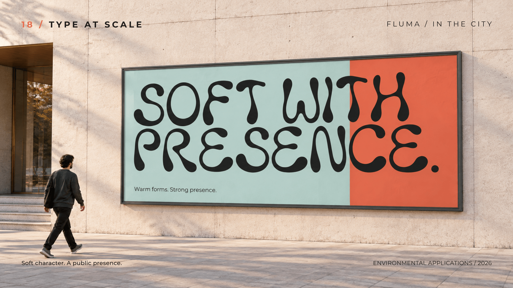
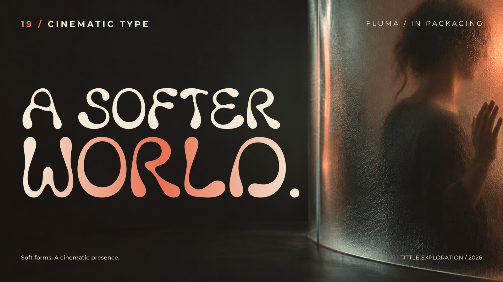
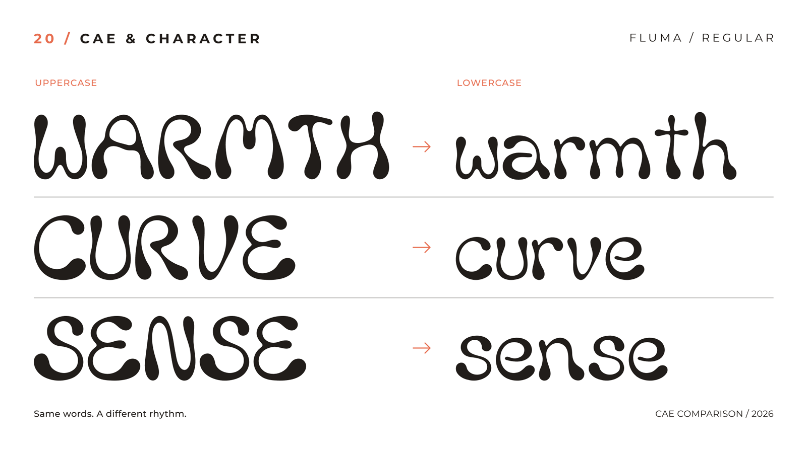
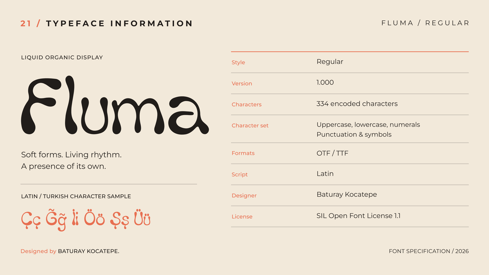
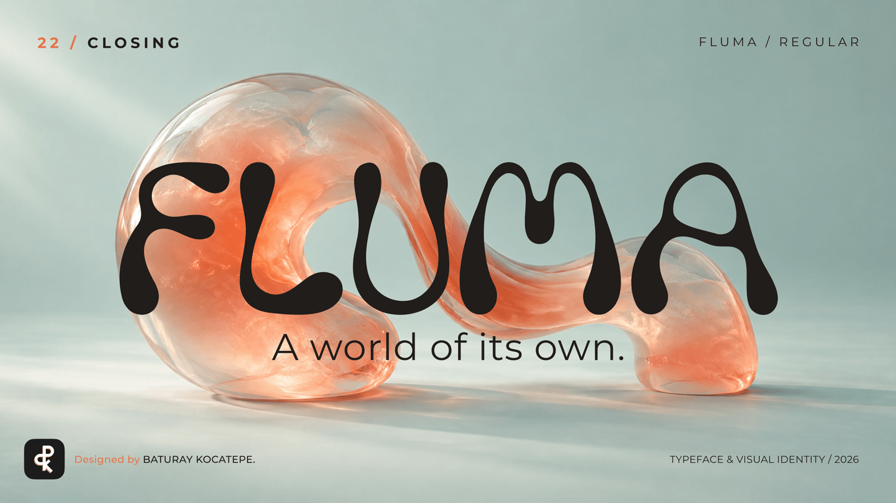